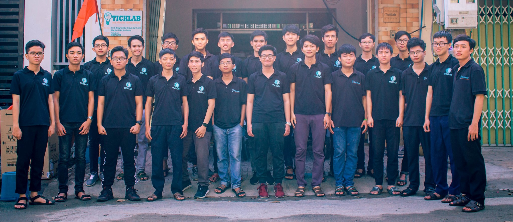

{% extends "main.html" %}
{% block tabs %}
{{ super() }}
<style>
  .md-container {
    background: linear-gradient(to bottom, var(--md-primary-fg-color), #363949 99%, var(--md-default-bg-color) 99%);
  }

  .md-header {
    position: initial
  }

  .md-main__inner {
    margin: 0;
  }

  .md-content {
    display: none;
  }

  @media screen and (min-width:60em) {
    .md-sidebar--secondary {
      display: none
    }
  }

  @media screen and (min-width:76.25em) {
    .md-sidebar--primary {
      display: none
    }
  }
</style>
<section class="mdx-container">
  <div class="md-grid md-typeset">
    <div class="mdx-hero">
      <div class="mdx-hero__image">
        
      </div>
      <div class="mdx-hero__content">
        <h1>Kho lưu trữ bài chia sẻ kiến thức</h1>
        <p>{{ config.site_description }}</p>
        <h4>
          Xem thông tin chi tiết của chúng tôi tại
          <a rel="me" href="https://ticklab.vn">
            <strong style="text-decoration: underline;">ticklab.vn</strong>
          </a>
        </h4>
      </div>
    </div>
  </div>
</section>
{% endblock %}
{% block content %}{% endblock %}
{% block footer %}
{% include "partials/footer.html" %}
{% endblock %}